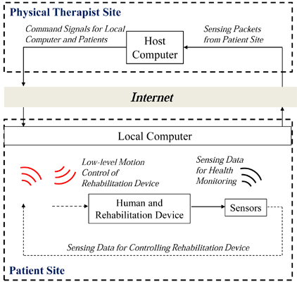
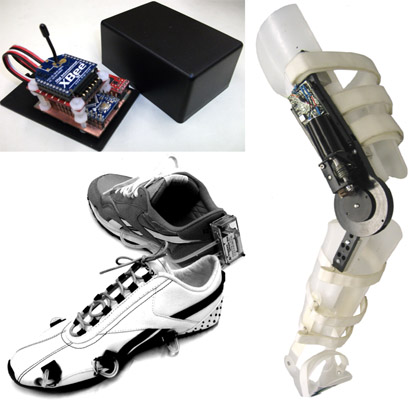

<!DOCTYPE html PUBLIC "-//W3C//DTD XHTML 1.0 Transitional//EN" "http://www.w3.org/TR/xhtml1/DTD/xhtml1-transitional.dtd">
<html xmlns="http://www.w3.org/1999/xhtml" lang="en" xml:lang="en">
<head>
	<meta http-equiv="content-type" content="text/html; charset=utf-8" />
	<meta name="description" content="MSC Lab Homepage" />
	<meta name="keywords" content="mechanical,systems,control" />
	<meta name="author" content="Raechel Tan" />
    <link rel="icon" href="../../mscicon.ico" />
    <link href='http://fonts.googleapis.com/css?family=PT+Sans|Brawler' rel='stylesheet' type='text/css' />
	<link rel="stylesheet" type="text/css" href="../../style.css" media="all" />
	<title>MSC Lab - Mechatronics for Human Assistance</title>
</head>

<body>
<div id="container980"><!-- Use"containerfull" for 100% width. For fixed width, use "container980", "container760" or "container600" (the number is the layout width in pixels). -->
	<div id="header">
    	
	</div>
	<div id="menu"> 
		<ul>     
			<li><a href="../../index.html">Home</a></li>
			<li><a href="../../people.html">People</a>
            	<ul>
                	<li><a href="../../people/tomizuka.html">Prof. Masayoshi Tomizuka</a></li>
                    <li><a href="../../people/students.html">Students</a></li>
                    <li><a href="../../people/visitors.html">Visitors</a></li>
                    <li><a href="../../people/alumni.html">Alumni</a></li>
                    <li><a href="../../people/prev_visitors.html">Previous Visitors</a></li>
                </ul>
            </li>
			<li><a class="current" href="../../research.html">Research</a>
            	<ul>
                	<li><a href="../robotics.html">Robotics</a></li>
                    <li><a href="../human.html">Human Mechatronics</a></li>
                    <li><a href="../disk.html">Hard Disk Drive Control</a></li>
                    <li><a href="../precision.html">Precision Motion Control</a></li>
                    <li><a href="../automotive.html">Automotive Control Systems</a></li>
                    <li><a href="../../research.html">more...</a></li>
                </ul>
            </li>
            <li><a href="../../publications.html">Publications</a>
            	<ul>
                	<li><a href="../../publications/papers_robotics.html">Robotics</a></li>
                    <li><a href="../../publications/papers_human.html">Human Mechatronics</a></li>
                    <li><a href="../../publications/papers_disk.html">Hard Disk Drive Control</a></li>
                    <li><a href="../../publications/papers_precision.html">Precision Motion Control</a></li>
                    <li><a href="../../publications/papers_automotive.html">Automotive Control Systems</a></li>
                    <li><a href="../../publications.html">more...</a></li>
                </ul>
            </li>
            <li><a href="../../resources.html">Resources</a>
            	<ul>
                	<li><a href="../../resources/news.html">News and Announcements</a></li>
                    <li><a href="../../resources/network.html">Network and Printing</a></li>
                    <li><a href="../../resources/courses.html">Prof. Tomizuka's Courses</a></li>
                    <li><a href="../../resources/conferences.html">Upcoming Conferences</a></li>
                </ul>
            </li>
            <li><a href="../../misc.html">Miscellaneous</a>
            	<ul>
                	<li><a href="../../misc/logo.html">MSC Logo</a></li>
                    <li><a href="../../misc.html">more...</a></li>
                </ul>
            </li>
            <li><a href="../../contact.html">Contact Us</a></li>
		</ul>
	</div>

	<div id="main">
    	<div id="navtree">
			<p><a href="../../research.html">Research</a> &gt; <a href="../human.html">Human Mechatronics</a> &gt; <a href="human_assist.html">Mechatronics for Human Assistance</a></p>
		</div>
    
		<div id="content">
        	<div id="sidebar">
			<div class="sidebarbox">
               <h3>Contents:</h3>
				<ul class="sidemenu">
                    <li><a href="#intro">Introduction</a></li>
                    <li><a href="#system">System Structure and Hardware</a></li>
                    <li><a href="#topics">Research Topics</a></li>
                    <li><a href="#researchers">Researchers</a></li>
                    <li><a href="#sponsor">Sponsor</a></li>
				</ul>
			</div>
			</div>

          <h2>Mechatronics for Human Assistance</h2>
		  <h3 id="intro">Introduction</h3>
		  <p>In this research, a networked mobile assistive system (NMAS) that integrates a physical assistive device with a high-speed wireless body sensor network is proposed. The proposed system provides a complete and active health care system to benefit the users (e.g. elderly people, patients with Parkinson’s disease and stroke) and improve the management strategy of the health care provider (hospitals, physical therapists). Various research topics are under investigation, including sensor and actuator design, human motion capture and analysis, control of the rehabilitation device over real-time wireless network, and clinical test of the wireless human motion monitoring system. This is a joint research project with computer science researchers from University of Texas, Austin (UTA) and physical therapists from University of California, San Francisco (UCSF).</p>
		  <p>&nbsp;</p>
		  <h3 id="system">System Structure and Hardware</h3>
		  <table width="100%" border="0">
		    <tr>
		      <td width="50%" align="center" valign="top"><p></p>
	          <p><strong>Structure of the NMAS</strong><br />
	            (two computers and two networks; internet to connect<br />
	            therapists and patients; a local wireless network to connect<br />
              local computer and all local devices.)</p></td>
		      <td width="50%" align="center" valign="top"><p></p>
	          <p><strong>Hardware developed for the NMAS</strong><br />
	            (upper left: wireless joint angle sensor; lower left: smart<br />
	            shoes for gait detection; right: compact rotary elastic<br />
              actuator for knee joint assistance)</p></td>
	        </tr>
	      </table>
		  <p>&nbsp;</p>
		  <h3 id="topics">Research Topics</h3>
		  <p><a href="human_assist/human_assist_shoes.html">Development of Smart Shoes</a><br />
		    <a href="human_assist/human_assist_sensor.html">Development of Wireless Joint Angle Sensor</a><br />
		    <a href="human_assist/human_assist_exo.html">Passive Exoskeleton Design for Human Motion Analysis</a><br />
		    <a href="human_assist/human_assist_cRSEA.html">Design and Control of a Compact Rotary Series Elastic Actuator (cRSEA)</a><br />
	      <a href="human_assist/human_assist_cRSEAwireless.html">Control of the cRSEA over Wireless Network</a></p>
		  <p>&nbsp;</p>
		  <h3 id="researchers">Researchers</h3>
		  <table width="100%" border="0" cellpadding="0" cellspacing="0" class="researchers">
		    <tr>
		      <td width="31%">Wenlong Zhang</td>
		      <td width="38%">Graduate Student</td>
		      <td width="15%"><a href="mailto:wlzhang@berkeley.edu" target="_new">Email</a></td>
		      <td width="16%">&nbsp;</td>
	        </tr>
		    <tr>
		      <td>Chen-Yu Chan</td>
		      <td>Graduate Student</td>
		      <td><a href="mailto:chanchenyu@berkeley.edu" target="_new">Email</a></td>
		      <td><a href="http://xlab.cn.nctu.edu.tw/cychan/" target="_new">Homepage</a></td>
	        </tr>
		    <tr>
		      <td>Kan Kanjanapas</td>
		      <td>Graduate Student</td>
		      <td><a href="mailto:kanjanapas_kan@berkeley.edu" target="_new">Email</a></td>
		      <td>&nbsp;</td>
	        </tr>
		    <tr>
		      <td>&nbsp;</td>
		      <td>&nbsp;</td>
		      <td>&nbsp;</td>
		      <td>&nbsp;</td>
	        </tr>
		    <tr>
		      <td><strong>Recent graduates:</strong></td>
		      <td>&nbsp;</td>
		      <td>&nbsp;</td>
		      <td>&nbsp;</td>
	        </tr>
		    <tr>
		      <td>Joonbum Bae</td>
		      <td>UNIST, Korea</td>
		      <td><a href="mailto:jbbae@unist.ac.kr" target="_new">Email</a></td>
		      <td><a href="http://jbbae.info" target="_new">Homepage</a></td>
	        </tr>
		    <tr>
		      <td>Kyoungchul Kong</td>
		      <td>Sogang University, Korea</td>
		      <td><a href="mailto:kckong@sogang.ac.kr" target="_new">Email</a></td>
		      <td><a href="http://www.kckong.info/" target="_new">Homepage</a></td>
	        </tr>
	      </table>
		  <p>&nbsp;</p>
		  <h3 id="sponsor">Sponsor</h3>
		  <p>National Science Foundation (NSF)</p>
      </div>
		<div class="clear">&nbsp;</div>
	</div>

	<div id="credits">
		<p>&copy; 2015 Mechanical Systems Control Laboratory &nbsp;&nbsp; | &nbsp;&nbsp; <a href="mailto:dwai213@berkeley.edu" target="_blank">Contact the Webmaster</a></p>
	</div>
</div>
</body>
</html>
